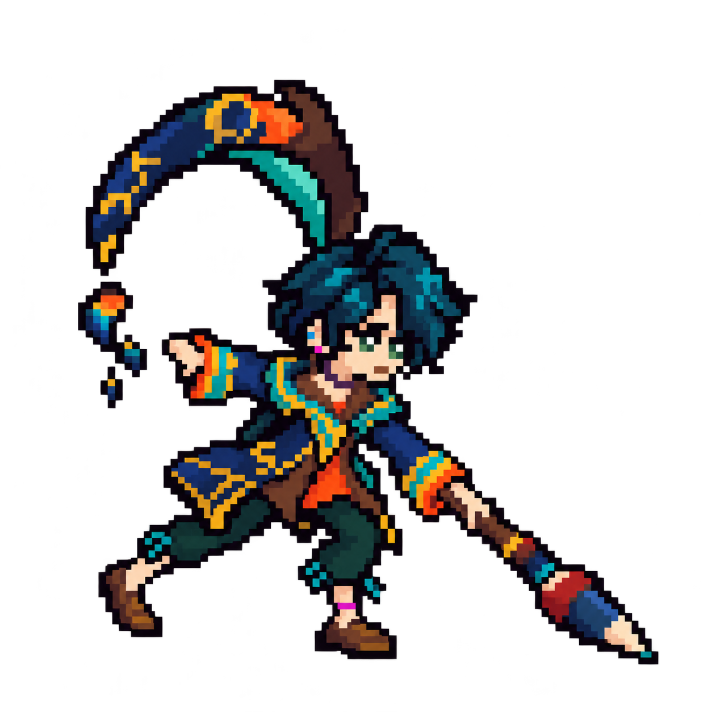
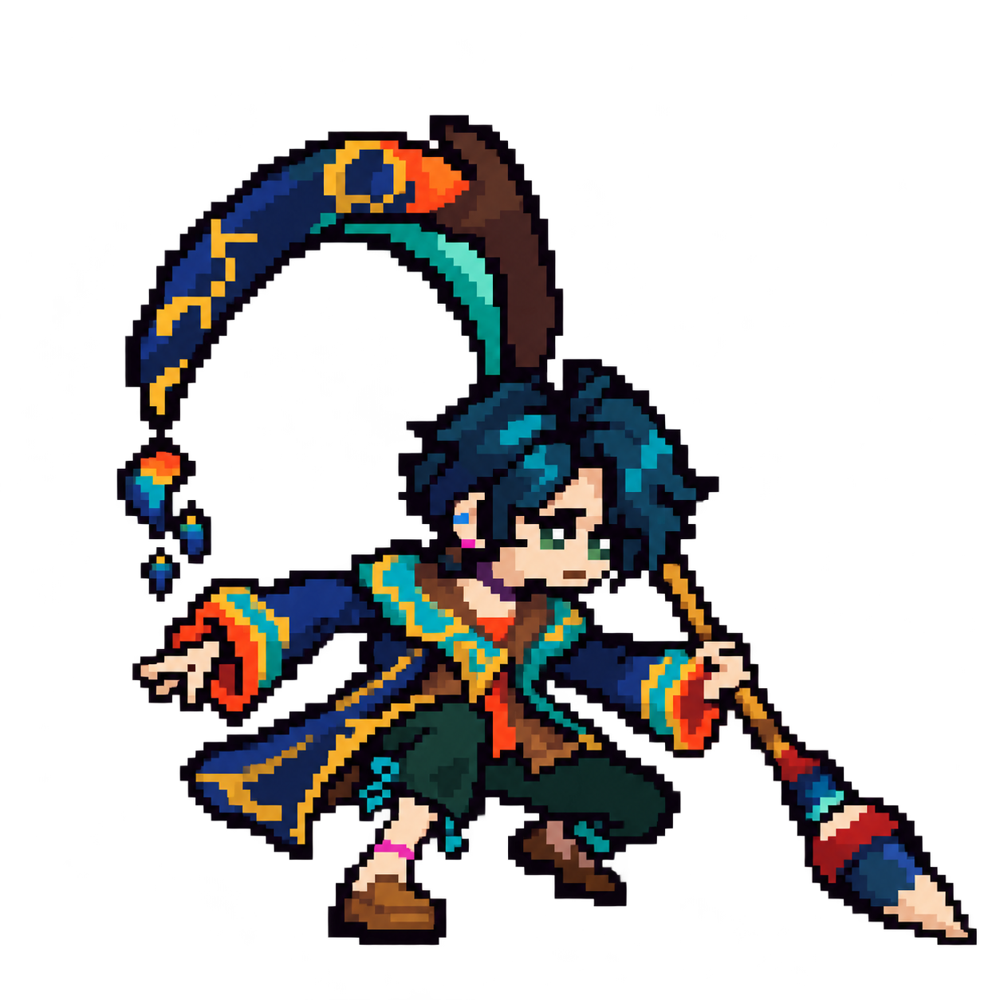
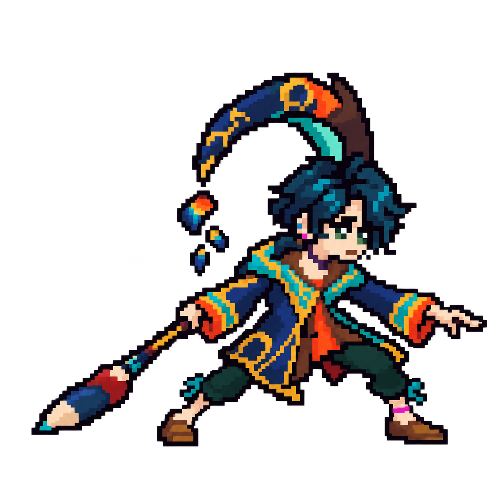
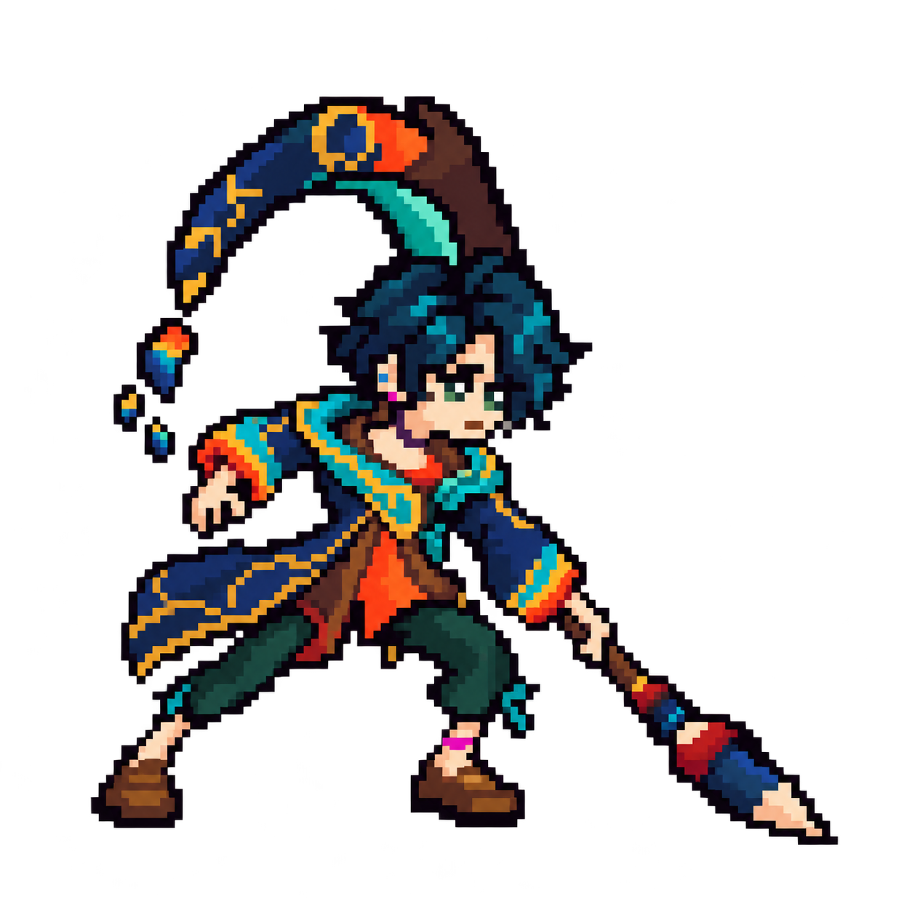
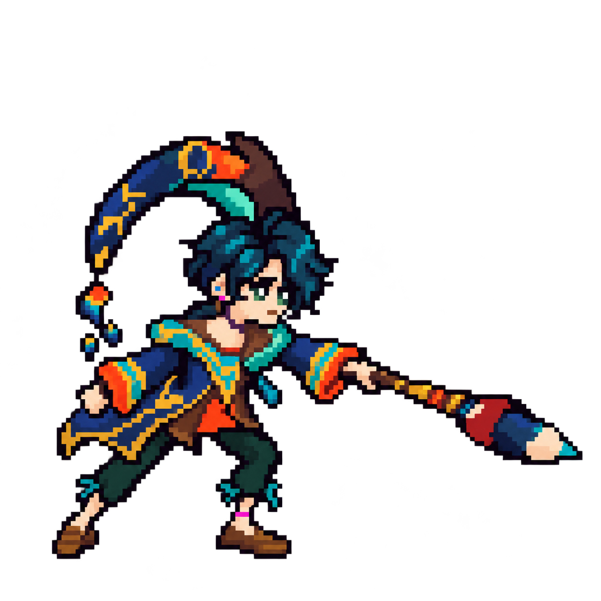
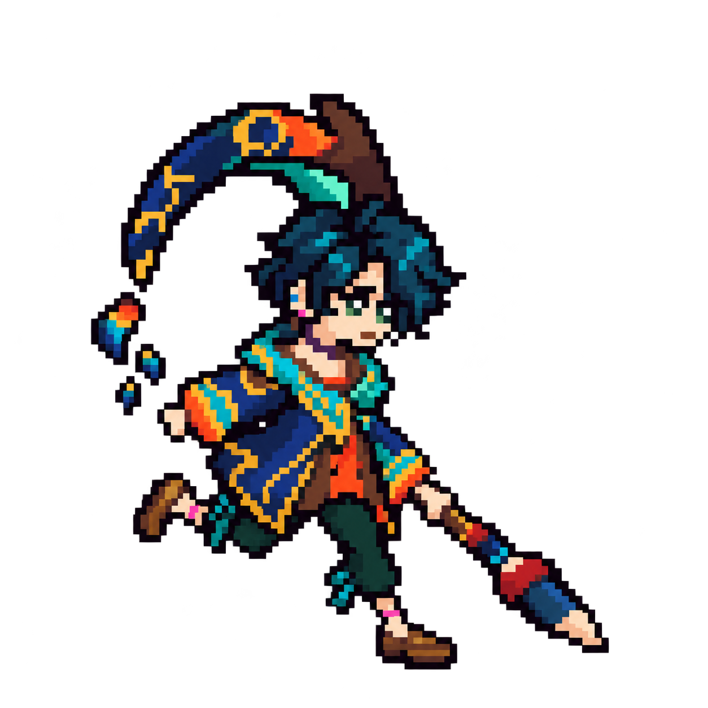

内置 image_gen 绘制；21 张独立 PNG。跑步 3、4 采用腿部补绘版。此页直接展示交付原图，没有缩放改写图片文件。所有图均含半透明像素；精确 12px 网格、脸部逐格一致、肢体长度与着地线尚未通过验收。详细偏差见 交接说明 与 检查记录。
hwei-pose-a_wind.pnghwei-pose-a_flick.pnghwei-pose-q_wind.png
hwei-pose-q_throw.pnghwei-pose-qw_raise.pnghwei-pose-qw_point.pnghwei-pose-qe_raise.png
hwei-pose-qe_slam.png
hwei-pose-ew_low.pnghwei-pose-ew_high.pnghwei-pose-ee_wind.png
hwei-pose-ee_swing.pnghwei-pose-r_open.png
hwei-pose-r_fling.pnghwei-pose-r_hop.png
hwei-pose-run1.pnghwei-pose-run2.pnghwei-pose-run3.pnghwei-pose-run4.pnghwei-pose-d_stagger.pnghwei-pose-d_kneel.png